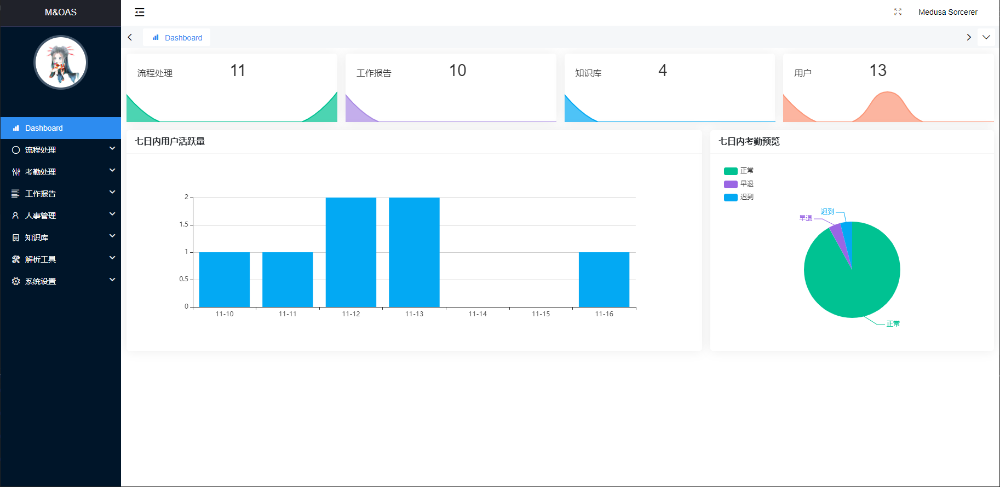

Welcome to M&OAS Docs
ooo ooooo .oo. .oooooo. .o. .oooooo..o
`88. .888' .88' `8. d8P' `Y8b .888. d8P' `Y8
888b d'888 88. .8' 888 888 .8"888. Y88bo.
8 Y88. .P 888 `88.8P 888 888 .8' `888. `"Y8888o.
8 `888' 888 d888[.8' 888 888 .88ooo8888. `"Y88b
8 Y 888 88' `88. `88b d88' .8' `888. oo .d8P
o8o o888o `bodP'`88. `Y8bood8P' o88o o8888o 8""88888P'
源码地址请访问 Github 进行查阅，并在 掘金·博客 上已发布相关文档说明。
版本：version 1.4.0

目录
项目说明
M&OAS 名称来源是 Office Automation Serviece 的简称。当然了，M 指代的是 Medusa 啦。
项目主要是实现 OA 平台的数据提交和数据管理审批，包含了 流程、考勤、日报、人事管理、知识库 功能，提供邮件提醒和推送相关数据。
项目正在维护中，欢迎各位哥哥姐姐们 在这里 提供相关建议和问题。
项目 Github 相关
项目板块
项目文件总分为三个部分的大板块，分别是 后端、前段、文档。
- 后端：
Python+Django+rest-framework+MySQL - 前端：
okAdmin+Layui+Javascript+CSS - 文档：
MKDocs+Markdown+CSS
再次感谢提供的框架平台的作者：
- Django 3.1 https://docs.djangoproject.com/en/3.1/
- okAdmin 2.0 https://gitee.com/ktwap/ok-admin
- Layui https://www.layui.com/
- rest-Framework https://www.django-rest-framework.org/
- MKDocs 1.1.2 https://www.mkdocs.org/
- formSelects 多选解决方案 https://hnzzmsf.github.io/example/example_v4.html
项目组成
│ .gitignore // Git 文件
│ front-service.py // 本地前端测试 Flask 服务器
│ manage.py // Django 启动入口
│ migration.py // 脚本：生成 MySQL 表
│ README.md
│ requirements.txt // PIP 依赖
│ uwsgi.ini // uWSGI 配置
│
├─ applications // Django Apps
│ │ attendance // 考勤处理
│ │ dashboard // Dashboard
│ │ process // 流程处理
│ │ report // 工作报告
│ │ repository // 知识库
│ │ setting // 系统设置
│ │ tools // 解析工具
│ └─ user // 用户配置
│
├─ conf
│ │ conf.json // 邮件配置
│ └─ conf.py // 系统参数配置
│
│ lib
└─ MOAS
│ asgi.py
│ settings.py // Django 配置
│ urls.py
│ wsgi.py
└─ __init__.py
项目启动
后端
后端启动需要使用 Python 3.8+ 作为基础环境，并安装所需的依赖库：
python3 -m pip install -r requirements.txt
你需要安装并配置 MySQL 服务，再使用以下命令，在 MySQL 交互模式中创建数据库：
CREATE DATABASE databaseName DEFAULT CHARACTER SET utf8 COLLATE utf8_general_ci;
将 databaseName 替换成你需要命名的数据库名称即可。
vi ./conf/conf.py
将数据的相关信息补充到 conf.py 中，供 Django 调度使用，配置完成后即可保存退出，生成数据表：
python3 migration.py
你也可以使用 Django 的迁移命令进行数据迁移，但为了避免迁移时的错误，推荐你使用已有脚本的方式执行。
你需要将邮件服务系统的数据配置到 conf.json 文件中，以获取邮件提醒的服务功能：
vi ./conf/conf.json
直接启动可以使用 Django-runserver 的功能：
python3 manage.py runserver 0.0.0.0:8000
或者是使用 uWSGI 启动：
uwsgi --ini uwsgi.ini
停止时选取一种方式即可：
uwsgi --stop uwsgi.pid
pkill -9 uwsgi
前端
将打包的文件放在指定文件夹下使用 NGINX 启动(可以将 help 的帮助文档一起放置)，启动 NGINX 后访问即可。
注意，你可以使用 python3 front-service.py 启动前端服务，但需要注意的是跨域的问题，你可以使用 Chrome 的参数配置进行启动，也可以解决。
帮助文档
帮助文档是基于 Mkdocs 的服务进行撰写的，你可以直接使用下面的脚本进行启动查阅，当然也可以使用编译成 HTML 项目文件进行静态文件路由：
mkdocs serve -a localhost:8088
状态码
200查询/更新成功201新增成功204删除成功，由于204响应体无数据返回，删除成功状态码修改成200400参数错误401认证失败500服务器错误
后记
项目的最初想法是：在很多现有资产的情况下，实现办公自动化是很多大型公司已经实现的一个办公项目需求，而对于小型单位而言，有些则不会安排这样的项目，而对于不是 IT 行业的公司而言更加不会采取这样的措施。
当然私心是有的，拓展了自己的知识面以及第一次规划自己的产品，而最重要的还是开源给有需求的团队使用~
感谢大家~
注意
可能你在查阅 Dashboard 图示的时候显示的未更新其他侧边栏选项卡名称，而查阅该选项卡的时候可能是更新后的名称，这是由于相关文档界面未更新，我们推荐你在查阅相关界面的文档时，仅关注当前界面即可，避免造成不必要的错误理解。